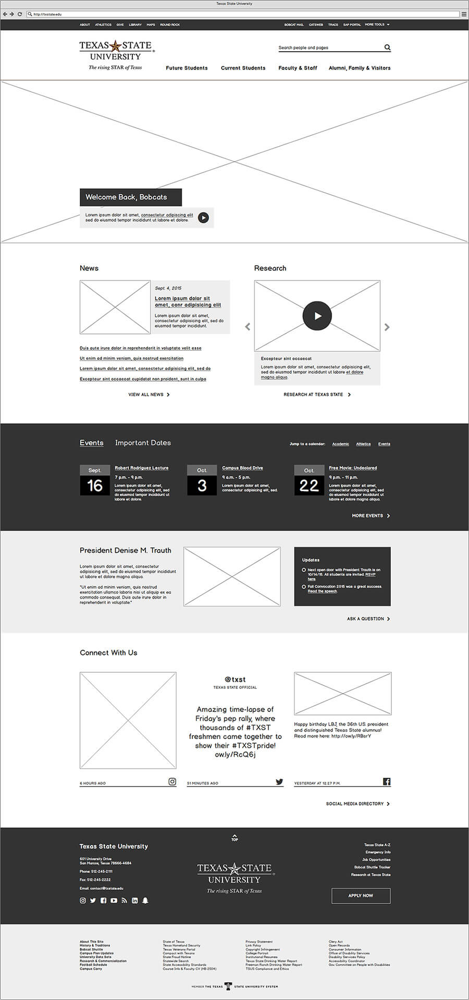
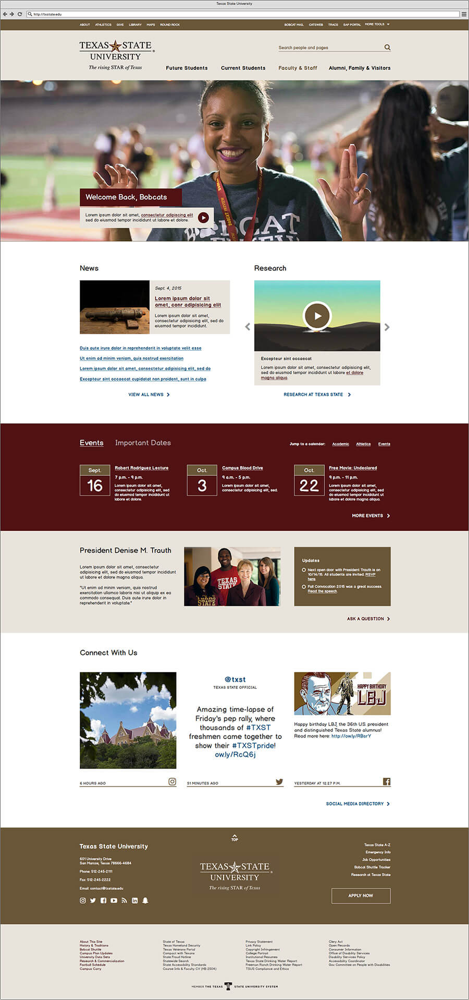
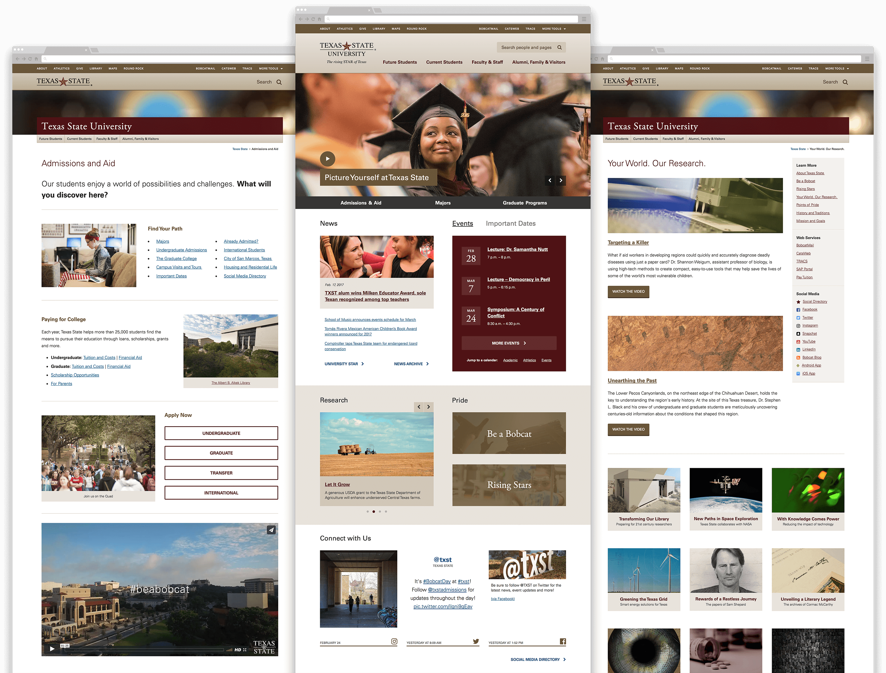
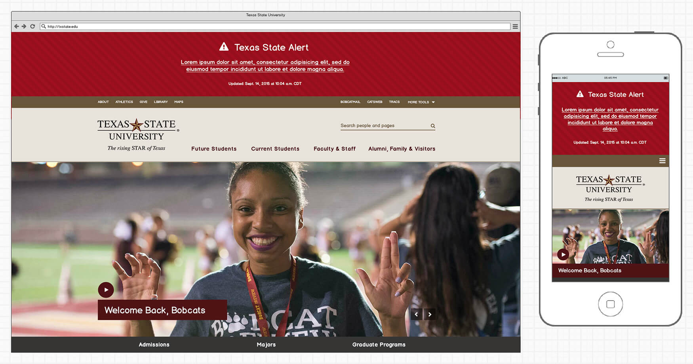
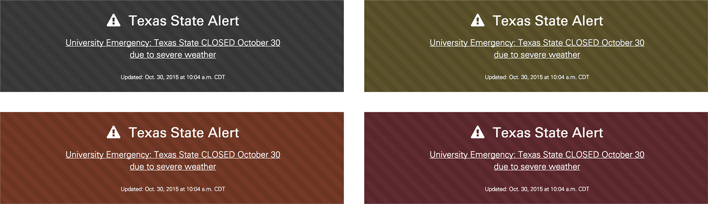
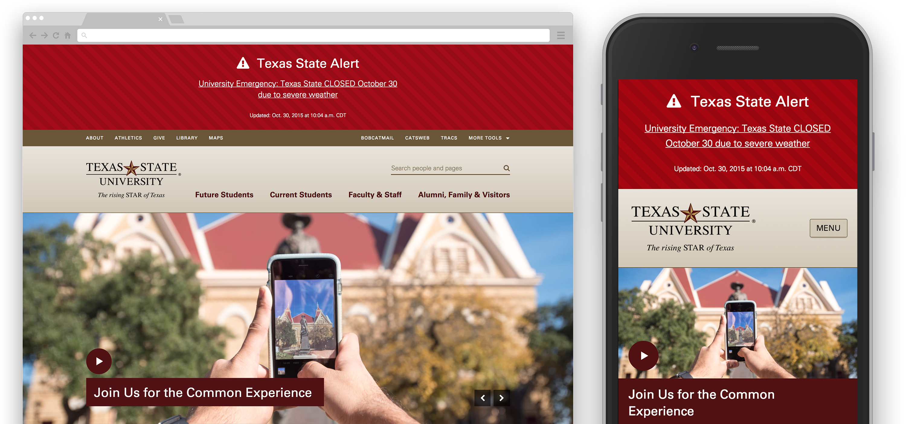

Overview
I designed and built the front end of Texas State’s first responsive homepage in the fall of 2015. It’s live on the web, and attracts about 1.2 million views each month.
Sections on this page
Context
The Texas State homepage hadn’t been updated since 2009. It utilized a condensed, “above the fold” approach and wasn’t optimized for mobile devices. Brand elements, color, and typography were dated or not systematic, and there was a heavy reliance on image snippets to achieve design objectives. Students and younger employees would frequently say a change was overdue.

Before: The Texas State homepage in June 2014
Goals
- Responsive and accessible
- Respect existing information architecture
- Handle emergency messaging in a clear, sensible way
- Highlight social media channels
- Be the centerpiece of a new, purposeful digital brand strategy
Process
This project closely followed the development of the university’s primary template and style guide, in which most brand elements and content patterns were intensively iterated upon and finalized. Much of the process involved applying these patterns to existing items, adapting content to a more-scrollable interface, and adding some key features to aid in recruitment and institutional politics.
Mockups
Using Balsamiq gave me the opportunity to really push its limits as a tool, and to create some sophisticated mockups that resolved a majority of the design decisions quickly.

Initial template wireframe

Wireframe with color and images added

Mobile layout with full color in Balsamiq
Demonstrating an enabled dropdown menu
Prototypes
With the mockups as a fairly strict guide, the rest of the design came to life in a high fidelity, responsive prototype built on a Pure.css grid. I made choices about interactive effects as I built it, and approved it with stakeholders row-by-row. Overall the build took about a month of dedicated work, with 90% of the markup and styles making it into the final product. The source code is on GitHub.
Going live
We turned on the new site at the beginning of 2016, making some key improvements to site search and adding various performance enhancements in subsequent iterations.



Major improvements over previous design
- Responsive design
- AAA accessible color contrast and keyboard navigation
- Brand and style guide adherence
- Modern, scrollable interface
- Graphical news, research, and social media features
- Ability to schedule content features
Noteworthy features
Emergency alerts
Surveys indicated that approximately 35% of the Texas State community checked the university homepage to confirm details in an emergency. After comprehensively studying a couple dozen peer institutions, and researching the broader issues of designing for stress, I identified the following must-haves:
- easy to read, click, or tap on any device
- located at the top of the screen; push all content down
- unique pattern unlikely to be confused with marketing objectives
- international symbology
- accessible and color blind-friendly
- timestamp indicating last update
After testing several options, a consensus was reached with university police, the president’s cabinet, and several informal test groups. The live demo is on GitHub and it’s part of the official brand guidelines too.

Initial mockup of responsive alerts using Balsamiq
Background striping is retained for the color blind (monochrome, red-blind, blue cone, red-weak)

Is it perfect?
Nope. But everyone was really happy with the results. If I could change anything it would be:
- It’s too flat: The site could really use some background patterns, gradients, or overlapping elements to add depth.
- Content strategy is dated: University websites are slowly becoming more recruitment and user focused, favoring data over politics. We weren’t able to change that this time around, but we laid the groundwork for a strategic shift.
- Medium-width device layout is lazy: For simplicity everything collapses to a single column at 800px. Given more time, I would’ve liked to play more with multi-column layouts from 480px to 800px.